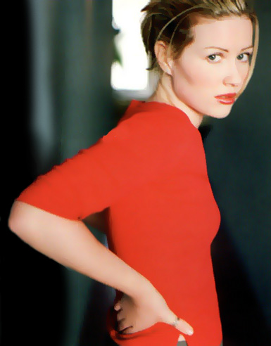

 Nome completo:. Dido Florian Cloud de Bounevialle Armstrong
Data de nascimento:. 25 de dezembro de 1971
Idade:. 34 anos
Signo:. Capricórnio
Local de nascimento:. Islington Norte de Londres, Inglaterra
Pais:. Clair ( escreve poemas como passatempo mas é dona de casa ) e William ( trabalha com
publicidade )
Irmão:. Rollo - Roland de Bouneville Armstrong ( Faithless )
Cabelos:. Castanhos avermelhados
Desenho:. The Simpsons
Músicas favoritas:. "Nothing Compares To U" da Sinead O'Connor, "Say A Little Prayer" da Aretha Franklin, "Your Song" do Elton John
CD's favoritos:. 'Leftism' de Leftfield, 'Songs in the key of life' do Stevie Wonder e 'Yellow Moon' do The Neville Brothers
Programas de tv:. "Família Soprano" e "Fawlty Towers"
Atividades:. natação e ginástica
Time:. Arsenal ( Inglaterra )
Na escola:. Música e educação física
Livros na infância:. "Winnie The Pooh", "The Lion, The Witch And The Wardrobe"
Música favorita de seu album de estréia:. Thank you
Bebida:. Chá e água
Comida:. Abacaxi, banana, chocolate e sanduíche de presunto
Influências:. The Police, Carole King, James Taylor, Bob Dylan, Dr Dre, Neil Young, Sade, Annie Lennox, Kate Bush, Nirvana
Medo:. montanha-russa e bungee jumping
Em um homem:. "um cara honesto, aberto as emoções, engraçado e que ame estar vivo"